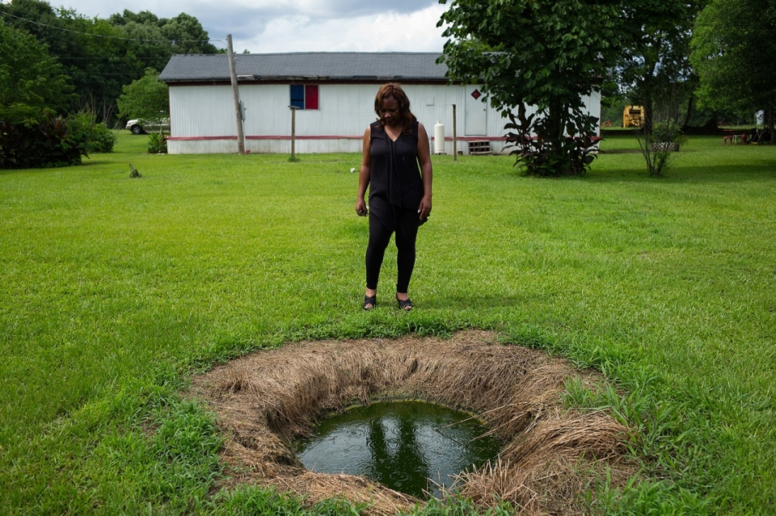
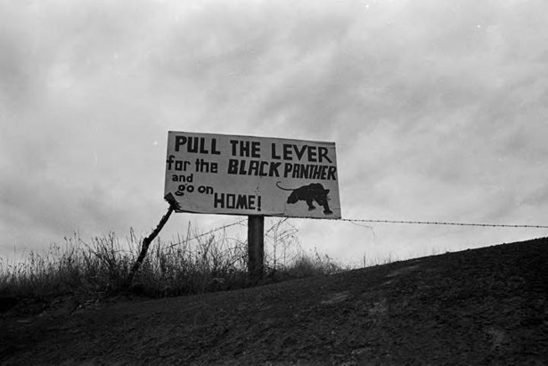
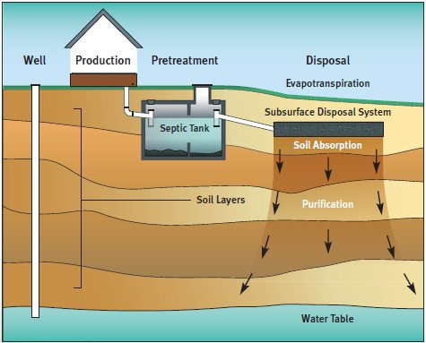
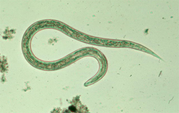
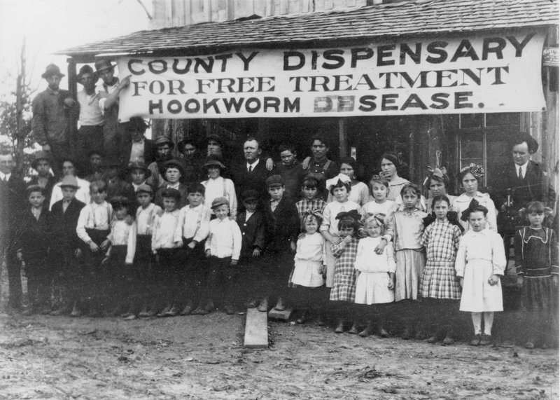
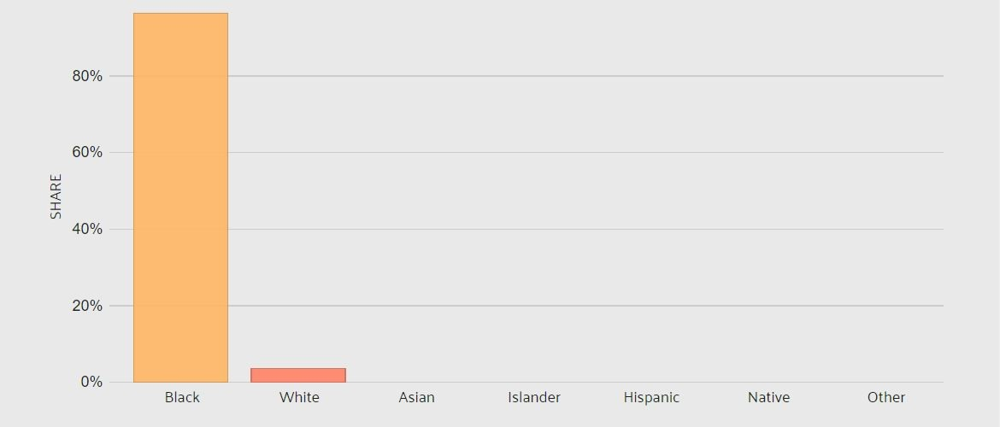
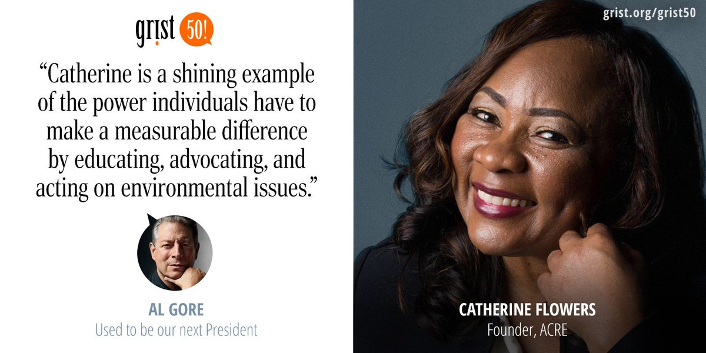

Lowndes County, Alabama
A sanitary emergency in the heart of the US
Intro
In the US we often take sanitation for granted- we flush the toilet and move along with the day without giving the waste a second thought. But imagine having that waste show up in your yard, having to live with it on a daily basis, or even worse, having it back up into your home after a heavy rain. Imagine that to ensure the waste is removed you would have to pay a full year’s salary, and that if you could not pay for this system in time you would be fined by the government and potentially even arrested for failing to act. Imagine if due to the characteristics of the soil and your inability to spend thousands of dollars on a septic system, that would likely fail in a matter of years, you and your children would be exposed to dangerous water-borne parasites. This is, and has been, the everyday reality for the citizens of Lowndes County.
Catherine Flowers, ACRE (source: AlJazeera.com)
Located southwest of Montgomery, Alabama, Lowndes County experiences historical legacies of racism and political disregard that magnify already significant water and sanitation problems and subsequent water quality related health impacts. Historically a site of plantation slavery, Lowndes County is a politically marginalized community, whose voice on this and other matters has been disregarded. The socio-political situation is exacerbated by geology characterized by nearly impenetrable soils, and an economically disenfranchised community who has limited means to implement and maintain conventional methods of addressing sewage containment. As a result, citizens of Lowndes County are currently dealing with limits in access to adequate health resources to respond to the repercussions of sewage overflow. This story map will walk through the historical and current physical geography and social conditions that contextualize the ongoing injustice in Lowndes County.
Historic Context
The current wastewater management issues in Lowndes County are better understood when viewed in a historical context. Lowndes County is located in the center of Alabama’s Black Belt region, originally named for the rich, black topsoil that allowed the thriving production of plantation crops, particularly cotton. This agricultural industry profited through the exploitation of enslaved peoples. Many of these people’s descendants still live in the Black Belt, adding a second connotation to the term. Stark power and wealth disparities along racial lines have been a fixture in the region, with the county once being known as “Bloody Lowndes” in reference to the high frequency of white violence used to control and terrorize the Black residents. For many years the scare tactics, coupled with systematic oppression, were effective, in 1964 the county was 80% Black but not a single Black citizen was registered to vote [1].
 A roadside sign for the Lowndes County Freedom Organization

The citizens of the county played a major role in the Civil Rights era with the creation of the Lowndes County Freedom Organization (LCFO) which worked to register Black voters and introduced the Black Panther symbol which would later be adopted in Oakland, California and throughout the nation [2]. When hundreds of marchers, including Dr. Martin Luther King Jr, passed through Lowndes County on their historic march from Selma to Montgomery, many citizens of the county came to cheer them on and offer food and water with full knowledge that these actions could make them targets for violence. The county also served as a rest stop and campsite for 300 protesters during the march [3]. This activist spirit can still be seen in the county today in organizations like the Alabama Center for Rural Enterprise (ACRE). ACRE works to address the needs of citizens who continue to face disproportionate rates of poverty and wastewater management issues that expose them to diseases which have been eradicated across most of the United States for decades.
 The symbol of the racist Alabama Democratic party was a white rooster. The Lowndes County Freedom Organization offered the citizens an alternative, they used the black panther symbol
The symbol of the racist Alabama Democratic party was a white rooster. The Lowndes County Freedom Organization offered the citizens an alternative, they used the black panther symbol
Geology
The same characteristics that made the soil of Lowndes County so ideal for growing cotton are now causing significant health and quality of life problems for the county’s citizens. The high clay content of the soil means that water infiltrates at a very slow rate. This is a problem particularly because 82% of Lowndes County residents reside in rural areas that are not served by conventional municipal sewer systems and therefore rely on septic systems that require porous soils to function properly [4]. Small-scale, spatially distributed septic systems generally have a concrete tank that collects influent from a home. Solids settle out in the tank and then liquids travel into a system of perforated pipes where water is supposed to infiltrate back into the soil.
 Septic tank diagram (source: http://www.uri.org.al/)The US Geological Survey characterizes the aptitude of soils for use with septic tanks based on infiltration rates, depth to water table and flooding frequency, along with other factors. The map on the right shows that nearly the entire county has been classified as very limited in its potential to effectively treat wastewater with septic tanks, and yet the citizens of Lowndes County are expected to continue using a technology that has been proven ineffective [5].
Water
Wastewater management is an issue for more than a billion people worldwide and Lowndes County shows that the United States is not an exception to this problem. As noted, county residents are largely reliant on spatially disaggregated septic systems built for specific homes or sets of homes to deal with their wastewater, and yet the Alabama Department of Public Health has reported that 50% of these small septic systems are not functioning as designed and are likely to become completely ineffective in coming years [6].
Water related complaints in Haynesville, years 2012-2017. A majority of water related complaints were related to sewage issues even in Hayneville, the county seat which has access to municipal water systems.Due to historical injustice and lack of economic opportunity, many people are unable to make the changes required to keep these septic systems functioning. A review of a small sample of public complaints from 2012-2017 suggests that 40% of water related complaints in Lowndes County are about sewage overflow and one third of the complaints relate to leaking sewage or broken sewer lines [7]. Other research has shown that more than 40% of residents reported having sewage backup into their homes [8]. As a result, many residents are forced to rely on ‘straight piping’ or direct piping of waste from their homes to an an adjacent outdoor space. This waste then persists and can be exacerbated during heavy rains and flooding. Human interaction with contaminated water leads to the prevalence and perpetuation of the hookworm problem. A small sample of 55 people showed more than a third of adults in Lowndes County were infected with helminthes (hookworm) [ibid].
Although there are significant physical, social and economic impediments to adequately treating wastewater, in 2002, 37 families from Lowndes County were threatened with fines and jail time for not treating household wastewater properly [9] and at least ten African-American residents were formally charged with violating the Alabama State Code for operating sewage disposal systems that posed a public health risk between 1990-2002 [10]. Involvement of the district court in this light highlighted the institutionalized barriers to adequate sanitation in poor, rural areas of the Alabama Black Belt [11].
Global hookworm distribution
The geographic distributions of the hookworm species that are intestinal parasites in humans, Ancylostoma duodenale and Necator americanus, are worldwide in areas with warm, moist climates and are widely overlapping. The vast majority of cases occur in Sub-Saharan Africa, Southeast, South and East Asia, and parts of South America. Soil and climate are two critical landscape features that determine the distribution of hookworm species. The larvae require sandy, loamy soils in order to develop to a stage which can then infect humans. In addition, the soils must be moist and the temperature must be warm. These infective larvae can survive 3 to 4 weeks in favorable environmental conditions. On contact with the human host, the larvae penetrate the skin and are carried through the blood vessels to the heart and then to the lungs.[12]
Hookworm. Credit: www.cdc.gov
Lack of sanitation infrastructure results in feces being distributed directly in the human environment or in proximal living spaces. This leads to an abundance of points of contact for transmission between hookworm larvae and human hosts. With human waste containing hookworm present in the environment, people who are barefoot or otherwise have some contact between skin and contaminant (generally through the feet), can become infected. [13]
Hookworm in Lowndes County
Although hookworm was believed to have been eradicated in the United States in the early 20th century, the parasite can still be found in Lowndes County and other areas of the Black Belt. Due to the known problem with hookworm secondary to open sewage systems, Lowndes County, was chosen as a study site for a parasitic burden investigation in 2017. The study found that 34.5% out of 55 stool samples tested positive for Necator americanus (hookworm) [14].
Hookworm was a fact of American life a century ago. In this photo, circa 1912, from Faulkner County, Arkansas, resident gather outside a "dispensary" for free treatment. Credit: NPR
Hookworms live in the small intestine. Hookworm eggs are passed in the feces of an infected person. If the infected person defecates outside (near bushes, in a garden, or field) of if the feces of an infected person are used as fertilizer, eggs are deposited on soil. The eggs can then mature and hatch, releasing larvae. The larvae mature into a form that can penetrate the skin of humans.Hookworm infection is mainly acquired by walking barefoot on contaminated soil [12].Iron deficiency, impaired cognitive development, and stunting in children are side effects of intestinal parasitic infections [8].
>Demographics
According to the 2010 census, Lowndes County is predominantly Black (74.6%), with the remainder characterized by White residents (24.4%), Hispanic residents (0.47%), Residents with two or more ethnicities (0.41%), and Native-American residents (0.08%). An overwhelming majority (97.6%) of residents living below the poverty line, identify as Black or African-American (Fig. 1 and 2). The largest population of residents living in poverty are females age 35-44. Furthermore, 18.1% of Lowndes County citizens over 25 do not have a high school degree, this is higher than the national average of 14.6%.
Population ethnicity in Lowndes County, AL (2016). Data derived from American Community Survey 5-year Estimate sourced from U.S. Census Bureau.The median household income level for Lowndes County is $27,914, which is roughly half of the national median income ($55,322). The most common occupations held in the county are in manufacturing, healthcare and social assistance, retail trade, educational services, and public administration services. Lowndes County has seen a decrease in property values from a median value of $71,400 in 2013, down to $67,800 in 2015. This is still significantly lower than the national median of $176,700 or even the state median of $122,500. 99% of the residents of Lowndes county are citizens of the United States [15].
 Poverty by ethnicity in Lowndes County, AL (2016). Data derived from American Community Survey 5-year Estimate sourced from U.S. Census Bureau.
Population gender in Lowndes County, AL (2016). Data derived from American Community Survey 5-year Estimate sourced from U.S. Census Bureau.ACRE
It is important to recognize the Citizens of Lowndes who have been working for years to address these issues in Lowndes County. The Alabama Center for Rural Enterprise (ACRE) has been a leading advocate for the people of Lowndes County with its mission statement of “Targeting the Root Causes of Poverty”. The center was founded in 2002 by Catherine Coleman Flowers, a lifelong resident of Lowndes County who has worked extensively to advocate for the people of Lowndes. Catherine has a deep understanding of the systemic apathy and injustice that have plagued the citizens of Lowndes County and works tirelessly to communicate the needs of the community and connect with those who may be able to help make meaningful change. In recent years ACRE has focused on the issues regarding wastewater disposal as the conditions in Lowndes County create serious health risks to the citizens. This issue is also pushing many to migrate away from the county which negatively impacts the county’s economy and proliferates the cycles of poverty.
Catherine Flowers. Credit: Grist.org
Get Involved
The citizens of Lowndes County have lived in unsanitary conditions for decades, and this is not an isolated case. The same conditions that cause these issues in Lowndes exist throughout the Black Belt region of Alabama. These are American citizens who are living in unsanitary conditions and with parasitic diseases that are typically only found in the most poverty stricken regions of the world. The United States is the birthplace of some of the world’s great innovations, undoubtedly we can develop solutions that ensure that every person in the United States does not have to cope with these kinds of issues any longer.
You can help by contacting some of the representatives listed below and letting them know that you care. Let the citizens of Lowndes County know that they are valued and that it is important that something is done to remedy this situation.
Senator Richard Shelby - The senator has spoken before about the importance of water and even helped to establish a National Water Institute at the University of Alabama, and still many of his constituents do not have access to adequate sanitation
Email: Richard Shelby
Phone: (202) 224-5744
Address: 304 Russell Senate Office Building Washington DC 20510
Senator Doug Jones - The newly elected senator has recently spoken of the importance of addressing the “crumbling water and sewage infrastructure” in the Black Belt
Email: Doug Jones
Phone:(202) 224-4124
Address:326 Russell Senate Office Building, Washington, DC 20510
Congresswoman Terri Sewell
Email: Terry Sewell
Get involved!
Stay updated! Follow the Facebook page of ACRE - Alabama Center for Rural Enterprise - for the latest news and updates. Or sign up to the mailing list at acre.com